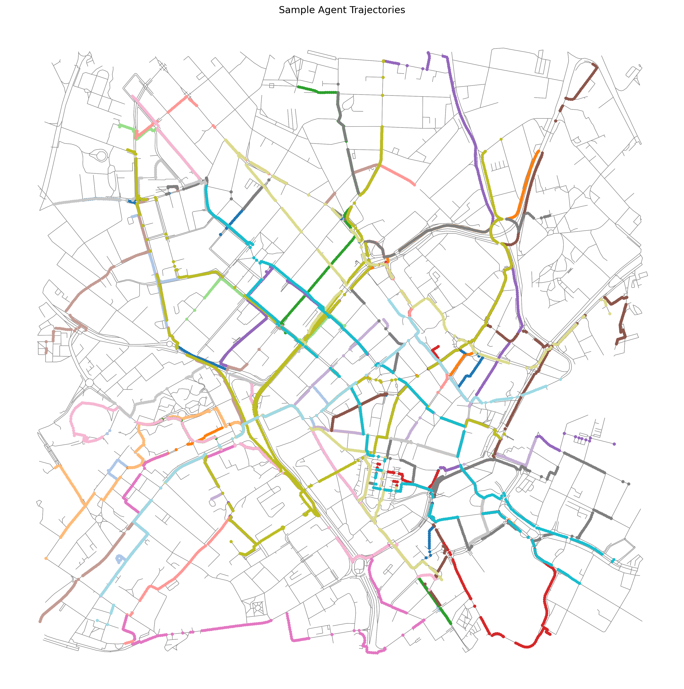

PlaceAgents
Multi-Stop Pedestrian Itineraries as
Platial Flows on Urban Networks
James Williams
Centre for Disruptive Era Studies
Birmingham Newman University, UK
Rethinking Urban Movement
- Urban life is not just A to B.
- People stitch together sequences of places (errands, leisure, work).
- Current models often focus on isolated trips (OD pairs).
- The Goal: Treat the itinerary as the base behavioural unit.
"Corridors are co-produced by clusters of amenities and itinerary logic."
From Space to Place: Platial Theory
Moving beyond abstract coordinates to meaningful locations.
Abstract Space
- Focus on X, Y coordinates.
- Single Origin-Destination pairs.
- Movement is "overcoming distance".
- Geometry-first.
Platial Information
- Focus on "Fuzzy Places" & POIs.
- Chained itineraries & routines.
- Movement is "linking functions".
- Meaning-first.
"The basic unit is not abstract space but fuzzy places." (Williams, 2025)
The PlaceAgents Framework
A pipeline for modelling multi-stop itineraries using exclusively open data.
1. Open Data
Built entirely on OpenStreetMap (OSM) and H3 Grids.
2. Explicit Agents
Transparent assumptions about pedestrian logic and speed.
3. Auditability
Full event logs and reproducible "Scenario" files (YAML).
Web Visualization
Methodology Pipeline
-
Data Acquisition (OSMnx):
Download routable pedestrian graphs and POIs (Cafes, Libraries, etc.) for city bounding box. -
Spatial Aggregation (H3 Grid):
Summarize context into hexagonal cells. Consistent aggregation across scales. -
Routing Engine (NetworkX):
Agents navigate using length-weighted A* search on the graph.
Designing the "Place Agent"
Agents represent pedestrians executing short itineraries.
State Machine:
{ Planning → Moving → Arriving → Finished }
- Origin: Sampled from network nodes.
- Targets: Sampled from POIs based on tags (e.g., "amenity=cafe").
- Constraints: Respects OSM opening hours (where available).
- Output: Per-tick event log for every move.
Case Studies: UK City Centres
| Metric | Nottingham | Birmingham |
|---|---|---|
| Scope | Compact, Market Sq. | Larger, Bullring/New St. |
| Agents | 1,000 | 1,000 |
| Network Edges | ~6,400 | ~8,900 |
| POIs | 1,317 | 1,858 |
Same pipeline, resolution, and time steps used for comparison.
Sample Agents
Nottingham

Birmingham
Results: Nottingham
High Concentration
Core street grid usage is intense, while backstreets remain quiet.
Gini Coefficient: 0.82
Indicates high inequality in edge load distribution.

Results: Birmingham
Wider Dispersion
Larger network creates less concentrated flows compared to Nottingham.
Gini Coefficient: 0.77
Load aligns strongly with structural connectivity (Betweenness Centrality).
Conclusions & Future Work
Contribution: A baseline for itinerary-centred simulation using 100% open data.
Model Extensions:
- Contextual Layers: Integrating exposure data (pollution, noise) into H3.
- Richer Narratives: Expanding agents (commuters vs tourists).
- Scale: Moving to city-wide simulation.
New Horizons
I am moving to a new role to apply platial narratives in slavery and war, exploring the fusion of platial and spatial data. .